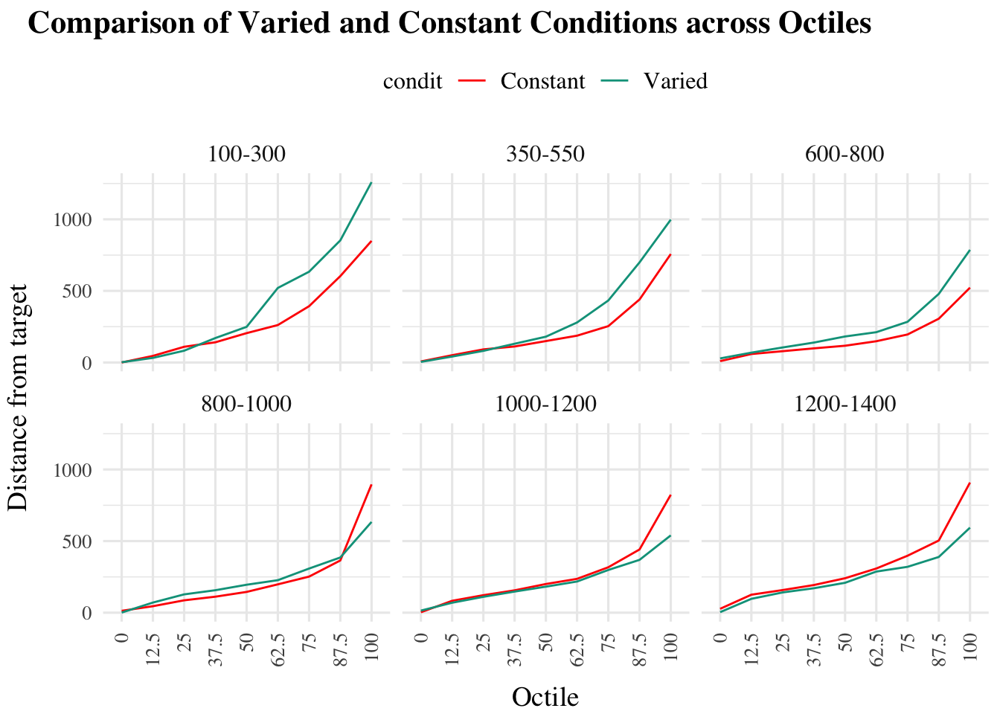

raw_table<-testAvg%>%group_by(condit,vb)%>%reframe(enframe(quantile(dist, seq(0,1,1/8)), "quantile", "dist"))|>pivot_wider(names_from=quantile,values_from=dist,names_prefix="Q_")|>group_by(vb,condit)|>summarise(across(starts_with("Q"), round,1))long_data<-raw_table%>%pivot_longer( cols =starts_with("Q"), names_to ="Quartile", values_to ="Value")%>%mutate(Quart =str_remove_all(Quartile, "Q_|%"), # Remove "Q_" and "%" Quart =as.numeric(Quart), # Convert Quart to numeric Quart =factor(Quart, levels =sort(unique(Quart))))bold_lower<-function(data, by_group){ifelse(data<by_group, cell_spec(data, "html", bold =T), as.character(data))}# Separate data by conditionconstant_data<-raw_table%>%filter(condit=="Constant")varied_data<-raw_table%>%filter(condit=="Varied")# Apply function to varied datavaried_data<-varied_data%>%group_by(vb)%>%mutate(across(starts_with("Q"), function(.x){col_name<-cur_column()by_group<-constant_data[[col_name]][constant_data$vb==first(vb)]bold_lower(.x, by_group)}, .names ="{.col}"))# Format the constant_data to match the varied_dataconstant_data<-constant_data%>%group_by(vb)%>%mutate(across(starts_with("Q"), ~as.character(.x), .names ="{.col}"))# Join the constant and varied data frames back togetherfinal_table<-bind_rows(constant_data, varied_data)%>%select(vb, condit, ends_with("%"))%>%arrange(vb, condit)# Print the tablefinal_table%>%kable("html", escape =F)%>%kable_styling()%>%pack_rows(index =table(final_table$vb))
vb
condit
Q_0%
Q_12.5%
Q_25%
Q_37.5%
Q_50%
Q_62.5%
Q_75%
Q_87.5%
Q_100%
100-300
100-300
Constant
0
46.1
109.7
141.1
205
261.5
393.2
603.3
849.4
100-300
Varied
1.8
32.1
82.4
170.8
248.9
520.7
633.9
852.8
1259.7
350-550
350-550
Constant
7.3
50.9
91.5
111.8
149.5
187.3
253.9
440.1
757.5
350-550
Varied
4.2
41.4
81.2
130.9
180.1
279.5
433.1
699.3
997.8
600-800
600-800
Constant
9.5
59.2
78.9
98.7
117
148.5
195.6
305.8
522.6
600-800
Varied
28.4
68.8
104.9
139.1
181.7
211.6
284.2
478.9
786.6
800-1000
800-1000
Constant
12.9
45.2
86.3
111.7
145
197.9
251.9
364.7
896.1
800-1000
Varied
0.7
70.6
127.8
156.8
195.1
226.9
308.2
385.5
633.8
1000-1200
1000-1200
Constant
3
83
122.2
156.1
200.1
236.3
317.2
441.5
823.7
1000-1200
Varied
14.5
69.4
110.7
147.3
181.7
217.6
298.3
368.9
539.9
1200-1400
1200-1400
Constant
26.9
125.5
157.9
193
240.5
308.4
397.7
503.8
908.9
1200-1400
Varied
3.6
96.7
141.3
170.6
208.7
287.1
320.2
389
593.9
Code
ggplot(long_data, aes(x =Quart, y =Value, color =condit, group =condit))+facet_wrap(~vb)+geom_line()+theme(axis.text.x =element_text(angle =90, vjust =0.5, hjust=1))+labs(title ="Comparison of Varied and Constant Conditions across Octiles", x ="Octile", y ="Distance from target")

Code
model<-lmer(Value~condit*Quart+(1|vb), data =long_data)summary(model)
Linear mixed model fit by REML ['lmerMod']
Formula: Value ~ condit * Quart + (1 | vb)
Data: long_data
REML criterion at convergence: 1115.1
Scaled residuals:
Min 1Q Median 3Q Max
-2.5486 -0.4061 0.0253 0.3715 4.0652
Random effects:
Groups Name Variance Std.Dev.
vb (Intercept) 2096 45.79
Residual 8970 94.71
Number of obs: 108, groups: vb, 6
Fixed effects:
Estimate Std. Error t value
(Intercept) 9.933 42.946 0.231
conditVaried -1.067 54.680 -0.020
Quart12.5 58.383 54.680 1.068
Quart25 97.817 54.680 1.789
Quart37.5 125.467 54.680 2.295
Quart50 166.250 54.680 3.040
Quart62.5 213.383 54.680 3.902
Quart75 291.650 54.680 5.334
Quart87.5 433.267 54.680 7.924
Quart100 783.100 54.680 14.321
conditVaried:Quart12.5 -4.083 77.330 -0.053
conditVaried:Quart25 1.367 77.330 0.018
conditVaried:Quart37.5 18.250 77.330 0.236
conditVaried:Quart50 24.250 77.330 0.314
conditVaried:Quart62.5 68.317 77.330 0.883
conditVaried:Quart75 79.133 77.330 1.023
conditVaried:Quart87.5 86.933 77.330 1.124
conditVaried:Quart100 9.983 77.330 0.129